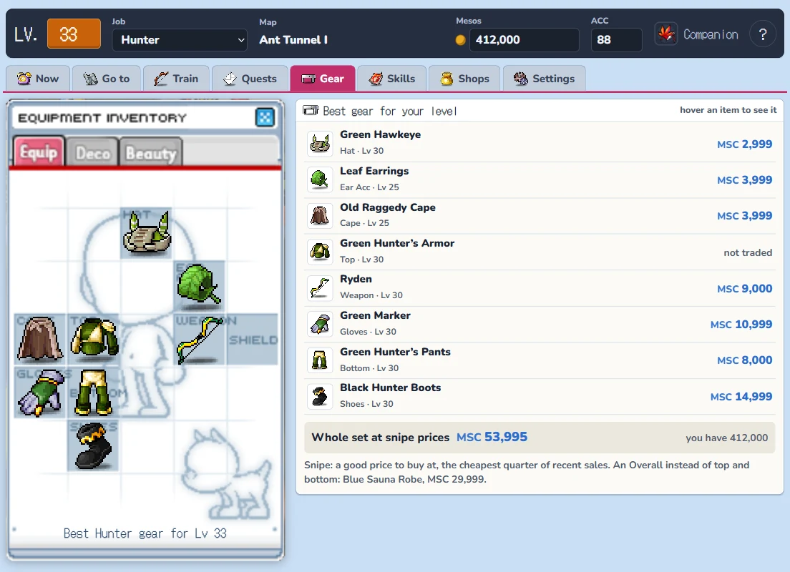

Companion for MapleStory Classic
A free helper that sits beside the game: where to train, which quests to take, what to wear, which skills to level, and the way to any map.
Free and open source (MIT). Unofficial: not affiliated with or endorsed by Nexon.

One dashboard, the game's own look
Companion opens in your browser and looks like a window from the game: item pictures, the real maps, Classic's Equipment Inventory. Set your job and level at the top and every tab fits itself to you. These are the real screens, for a level 33 Hunter.

Where to train
Maps for your level, best first: the most EXP for the HP you chew through, with more monsters counting extra.
- Each map's monsters with level, HP, EXP and spawns.
- The ACC you need to always hit.
- Your own EXP an hour on maps you've grinded, once screen reading is on.
- Take me there: the route, one tap away.

Quests you can take now
What's open at your level, who gives it, where they stand, and what it pays.
- Guide me in game: each monster to hunt and where, each item to collect and what drops it.
- Items you can buy instead of farming, and rewards with their market value.
- Who to bring it back to, then the next quest in the chain.

What to wear
Classic's Equipment Inventory with the best item for your job and level in each slot.
- Hover one for the game's tooltip, with requirements in red when you're short.
- Snipe and usual prices for each piece.
- The whole set's cost beside your mesos.

Where your SP and AP go
A skill window with a tab for each job you've had, and your next three skill points.
- The SP order comes from each job's class guide.
- What every skill does at level 1 and at max.
- AP into the stat a weapon you'll want soon needs, else your main stat.
The way to any map
Routes on the real map picture, with the game's own portals drawn and labelled and the one to take in a red ring.
- The quickest way, not the fewest portals: it counts the walk across each map.
- Takes the Regular Cab between towns when that's shorter.
- With screen reading on, it moves along as you change maps.
While you play
Two more switches in Settings, both off until you turn them on. With them, Companion reads the game window the way you do, and says what it sees.
Play in windowed or borderless mode, at 1920×1080 or larger.
- Now
- EXP an hour, time to the next level, kills, deaths, an EXP chart of the session, and your best maps by what you really earned. In a party it works out your share of each kill.
- Your windows
- Level, job and map from the HUD; quest counts from the Quest Helper; stats, skills, mesos and quests when you open those windows. Routes and quest guides move along by themselves.
- Shop prices
- Every row of a player shop judged against what the item really sold for on MSC and Cozy: snipe, fair, pricey or overpriced, only when both agree.
- Drawn on the game
- Prices under item tooltips, a label on each shop row, and an arrow under the mini map toward the next portal. Click-through windows; nothing goes into the game.
Safe by default
Out of the box Companion uses only public game data and market prices. It doesn't touch the game, read your screen, or even look for the game window.
- Only looksNo game memory, files, injection, hooks or input. The game process is never opened.
- Only the game windowCaptured through Windows Graphics Capture, the API OBS uses, and only while screen reading is on.
- No hotkeysNo keyboard hooks; everything is controlled from the dashboard.
- Never in your wayOn-game windows are click-through, never take focus, and hide when the game isn't in front.
- Stays on your PCYour data never leaves it, unless you connect Discord for shop sale alerts.
Install
- Download
Companion.exefrom the latest release and put it in its own folder. - Run it. The exe isn't signed, so Windows may say "Windows protected your PC": click More info, then Run anyway.
- The dashboard opens at
localhost:8765, on this PC only. A short setup asks for your job and level. - Keep Companion's small window open while you play; closing it closes Companion.
From source
Windows with Python 3.10 or newer:
git clone https://github.com/Tura2/classic-companion
cd classic-companion
pip install -r requirements.txt
python companion.pyOr double-click run.bat. build.bat builds the exe.
Help build it
One rule above all: Companion only ever looks. A change that reads game memory, sends input, hooks the keyboard or plays for you won't be merged, however useful.
- Report a bug
- Something reads wrong? Open an issue with the picture and text from Companion's
debugfolder. Crop out other players' names first. - Suggest a feature
- Say what you're trying to do in game and how Companion could help. The feature form asks just that.
- Send code
- Fork, branch, add a test, open a pull request. CONTRIBUTING.md has the setup and the map of the code.
Credits
- Game dataOSMS Data Explorer by ohmi69 (MIT): maps, monsters, items, quests, NPCs, portals.
- Pricesmaplestory-classic.com and Cozy Market.
- Quests and dropsClassic Maple Wiki contributors and MapleClassic Wiki, the latter via Club FM's public data (CC BY-NC-SA 4.0).
- ACC and class guidesNiaDB.
- Portal picturemaplestory.io.
- Everyone who helpedThe contributors; the full list is in CREDITS.md.